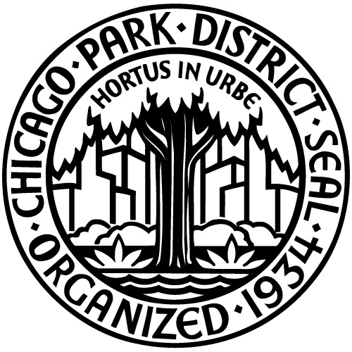
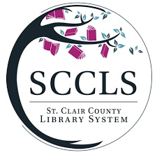

Resume
Education
Wayne State University
Detroit, MI
Master of Library & Information Science
Aug. 2024 - May 2027
- American Library Association (ALA) Student Chapter – President
- Future Librarians for Inclusivity and Diversity (FLID)
Michigan State University
East Lansing, MI
Bachelor of Arts – English
Aug. 2018 - May 2022
Bachelor of Fine Arts – Theatre
- Honors College, Dean’s List
- Spartan Marching Band Drumline, Spartan Brass, Department of Theatre, Kappa Kappa Psi
- Frank C. Rutledge $2800 Scholarship in Directing
- Teaching Assistant for THR 341 – Play Directing
Professional Experience
Springfield Township Library
Davisburg, MI
Adult Services Librarian
July 2025 – Present
- Provide reference services to patrons
- Design, promote, and conduct programs for adults
- Make cultivation and weeding decisions for adult collection
- Perform occasional circulation duties (CARL/The Library Network)
Wayne State University Library System
Detroit, MI
Graduate Student Assistant
Jan. 2025 - present
- Provide online chat reference services to students, faculty, and alumni
- Work on projects both assisting faculty members and taking lead - see portfolio page for complete list
- Check in/out materials to students at Undergraduate Library circulation (Sierra)
Student Assistant - Walter P. Reuther Labor Archives
Aug. 2024 - Dec. 2024
- Retrieved, logged, and returned collection materials for interested researchers
- Performed clerical duties at the front desk
Detroit Public Library
Detroit, MI
Customer Service Representative - Sherwood Forest Branch
Aug. 2024 - Dec. 2024
- Checked in/out materials to patrons using Workflows library software, set up and maintained patron accounts, charged and operated register
- Shelved materials/performed page-related duties
Chicago Public Library
Chicago, IL
Library Clerk - Harold Washington Library Center
Dec. 2023 - Aug. 2024
- Checked in/out materials to patrons using Polaris library software, set up and maintained patron database records
- Assisted patrons of all ages with material searches and general inquiries
- Processed new materials, sorted/distributed mail, performed various data entry tasks
Chicago Park District
Chicago, IL
Attendant - Olympia Park
Sept. 2023 - Aug. 2024
- Coorinated and indexed information for 150+ families in classes and Summer camp
- Stayed up-to-date with programming information and relayed to interested visitors
- Assisted older coworkers who were inexperienced with technology
McMorran Place Sports & Entertainment Center
Port Huron, MI
Interim Technical Director
Nov. 2022 - May 2023
- Oversaw inventory, use, and maintenance of multi-thousand dollar theatrical lighting, sound, and video system
- Collaborated with producers and directors in terms of bringing their visions to life
- Coordinated load-in/strike for travelling shows and concerts, oversaw payroll, and adhered to IATSE protocols
Technician/Operations - Theater
Dec. 2017 - Nov. 2022
- In-house lighting and sound designer for community productions
- Operated lights, sound, and video for concerts and shows to crowds of 1200 or more
- Ensured safety while loading and setting up set pieces, lights, speakers, & instruments
St. Clair County Library System
Port Huron, MI
Library Branch Assistant - Children's Library
Aug. - Nov. 2022
- Checked in-out materials to patrons using Horizon library software, set up and maintained patron accounts, assisted patrons
- Provided basic reference services to patrons, usually parents and children
- Processed requests both in-system and through MeLCat
- Travelled to local high schools to encourage library card signups
 MSU Writing Center
East Lansing, MI
MSU Writing Center
East Lansing, MI
Writing Consultant
Sept. 2021 - May 2022
- Revised and collaborated 1-on-1 with students on any material they brought in
- Tailored lient feedback based on individual goals
- Worked with students of diverse backgronds on projects ranging from Writing 101 papers to doctoral theses
Additional Experience
City of Port Huron
Port Huron, MI
Ranger - Lakeside Beach & Park and Lighthouse Beach
Summers 2020-2023
- Maintained cleanliness of park/beach facilities amidst the height of the COVID-19 pandemic
- Collaborated with local police to enforce ordinances with the general public
- Developing a successfully crowdfunded ($6500) video game by myself with artists for hire
- Design game, write code, compose soundtrack, write story, draw 2d pixel art
- Gamemaker Studio 2, Ableton Live, MS Paint
- Manage social media presence, create advertisements, maintain contact with journalists using Twitter, Tumblr, YouTube, Bluesky, and other online promotional outlets
Musical Artist
- Compose, arrange, perform, record, mix, and produce my own music
- Available on Spotify, Apple Music, and other streaming platforms
Private Music Instructor
- Teach percussion instruments, piano, and compositional techniques to students of all ages and skill levels
- Rates determined by student's age
- Perfect pitch - able to transcribe and play back music after hearing it once